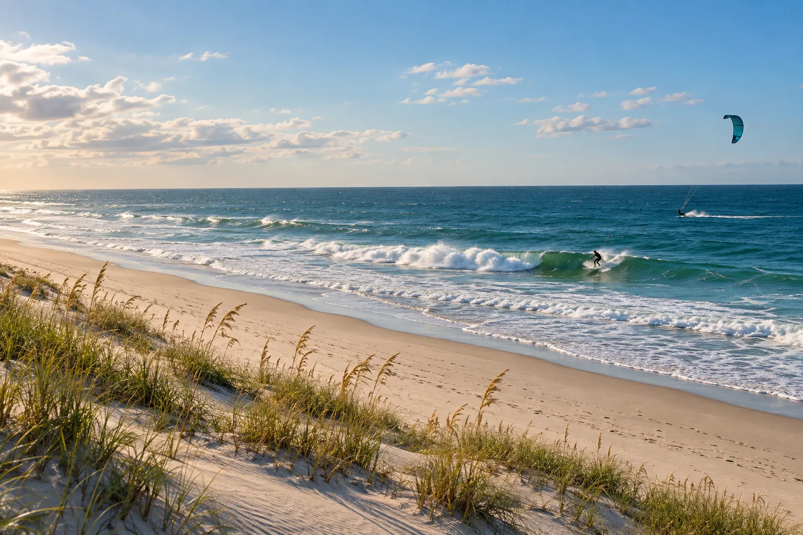

Cape Hatteras
Outer Banks, Caroline du Nord, États-Unis · surf, kitesurf, windsurf

Cordon d’îles sableuses exposé à l’Atlantique, avec des lagunes plates côté terre. Un spot complet pour la glisse.
- Lieu
- Outer Banks, Caroline du Nord, États-Unis
- Niveau
- Intermédiaire
- Activités
- surf, kitesurf, windsurf
- Type d'eau
- Mer / océan
- Coordonnées
- 35.25, -75.52 (position approximative du secteur)
Dangers à connaître
- Courants violents côté océan.
- Ouragans en fin d’été.
Le conseil d'Ocean Buddy
Le côté lagune est parfait pour apprendre le kite ; le côté océan pour le surf.
Ouvrir dans Ocean Buddy Télécharger sur l'App Store
Source : Fiche Ocean Buddy · septembre 2026 · à vérifier localement.